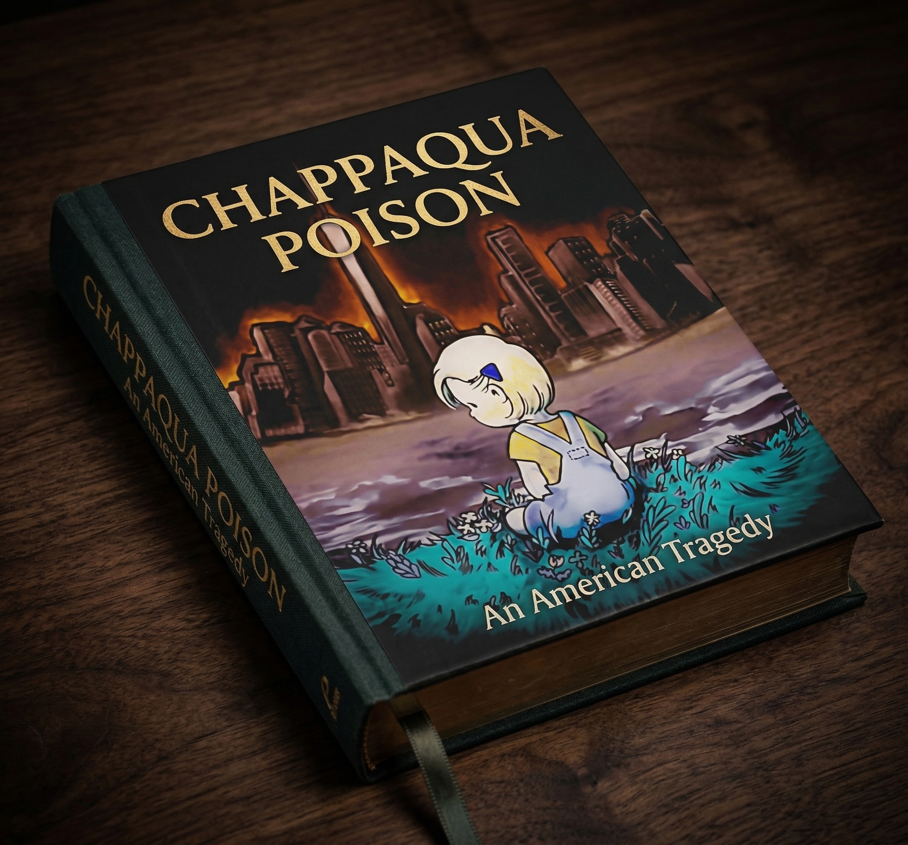

Chappaqua Poison
An American Tragedy
The Evidence Archive Edition
In one of the wealthiest communities in America, a woman poisoned her partner with psychiatric medications for over a year. When he discovered what was happening, she took their daughter across the country. When he went to court to get his daughter back, the court ordered him to erase his own record of what happened. Then the people who tried to help were removed, one by one, until no one was left who had seen what happened.
54 chapters of documentary narrative, with court documents, laboratory analyses, sworn testimony, text messages, and photographs. The evidence catalog links the available records and identifies unresolved source gaps. A jury in San Francisco found the mother liable for battery, domestic violence, and intentional infliction of emotional distress. Its separate punitive-damages finding used the disjunctive wording “malice, oppression, or fraud”; the punitive award was later struck. The courts that were supposed to protect the child have not acted on the verdict.
The Evidence Archive Edition brings together the record behind an unfiled federal complaint working draft. No federal filing is represented here. The trade edition is far along and in active revision. The record remains available for one more person willing to read it and help.
See current pricing on Gumroad.
Buy the Evidence Archive EditionPurchases support this work and the people this system failed.